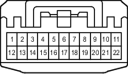

Наименование
Разъем распределительного блока
Код
G95
Каталожный номер
82824-30420
Цвет
Белый
Технические характеристики
Жгуты проводов для ремонта

Расположение
Расположение деталей в панели приборов (для моделей с левосторонним рулевым управлением) 3
Расположение деталей в панели приборов (для моделей с правосторонним рулевым управлением) 3
Система
Система адаптивного переднего освещения
Аудиосистема (для моделей с системой навигации)
Электронная система управления пневматической подвеской (для моделей с левосторонним рулевым управлением)
Кинетическая динамическая система подвески
Многофункциональный дисплей
Монитор "Multi-Terrain" (для моделей с системой навигации)
Монитор "Multi-Terrain" (для моделей без системы навигации)
Мультиплексная система передачи данных (CAN, для моделей с левосторонним рулевым управлением)
Мультиплексная система передачи данных (CAN, для моделей с правосторонним рулевым управлением)
Система навигации
Система помощи при парковке (монитор помощи при парковке / монитор заднего вида и монитор переднего и бокового вида с широкими углами обзора) (для моделей с системой навигации)
Система помощи при парковке (монитор заднего вида и монитор переднего и бокового вида с широкими углами обзора) (для моделей без системы навигации)
Система помощи при парковке (сенсорная система помощи при парковке TOYOTA) (с 8 датчиками, для моделей с системой навигации)
Система помощи при парковке (сенсорная система помощи при парковке TOYOTA) (с 8 датчиками, для моделей без системы навигации и с многофункциональным дисплеем)
Система помощи при парковке (сенсорная система помощи при парковке TOYOTA) (с 8 датчиками, для моделей без системы навигации и многофункционального дисплея)
Предаварийная система безопасности